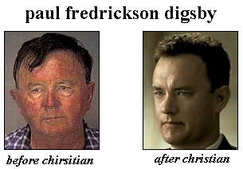

we also have three interview to help reprogram you thought
process to becgome christian! first is man who became borne again after life
of many hardeship... my first guest is Paul_00X_Digsby

***AOL LOG BEGIN***
doug_beach: tell us about youself before you be saveds
Paul_00X_Digsby: well before i became a christian i was in
all sorts of trouble. it started with gangs, then to stealing, at that point
i was addicted to drugs and didnt care anymore. thats how i eventually ended
up in prison; one day i couldnt afford pcp so i killed my drug dealer to get
my fix.
doug_beach: when did you become christian
Paul_00X_Digsby: about 5 years after i got in here. i was
originally serving a 20 year sentence but i killed 2 inmates over drug disputes
in that time so im a lifer now. it was a dark time in my life; but one day
i saw my cell mate reading a bible and out of the blue i asked to read it.
i got hooked from there and thats how i became a born again christian
doug_beach: no offensre but why do you have to ruin heavan?
lets face it you basically scum of the earth but getting into heavan by loophole
of born againe christian